Unapproved candidates. Packed character frames use the 48-colour atlas.
A7 gear2Steam fill is set to 0.86 after v01 clipping; v02 dry-run is clear. A8 gear2Burst v02 uses sidecar drop [3] to remove a duplicate frame and pack 7/7.
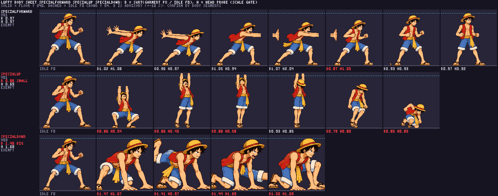
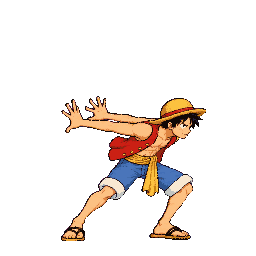
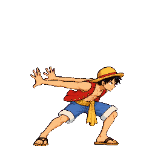
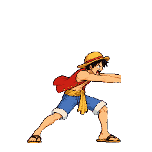
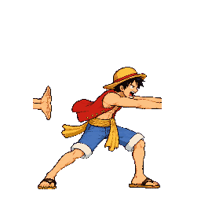
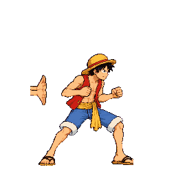
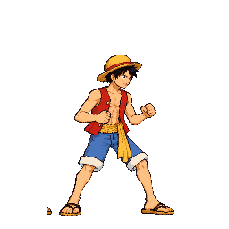
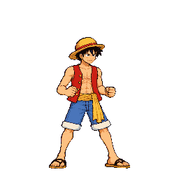
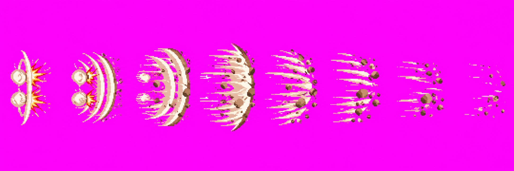
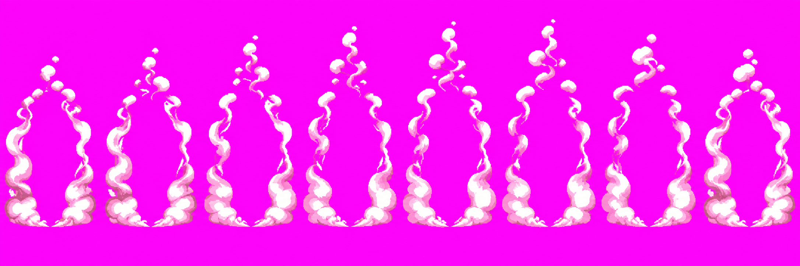
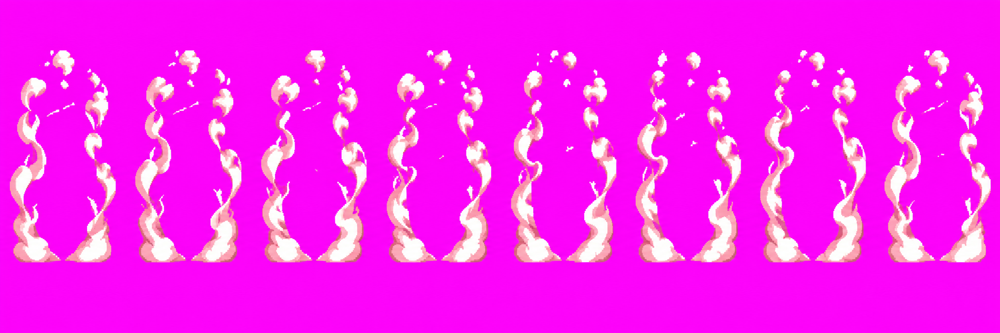
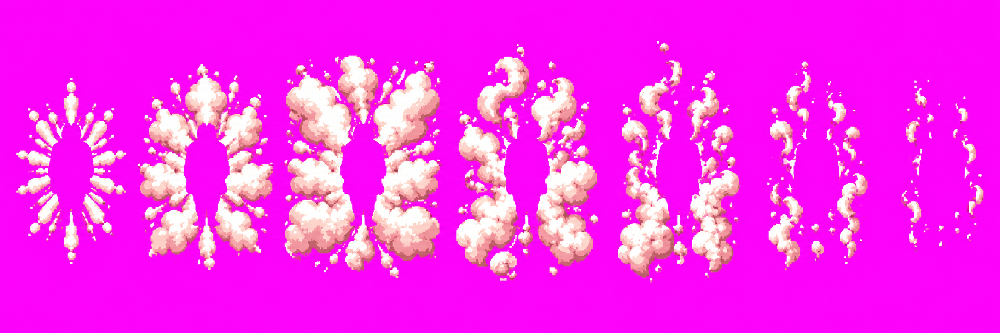
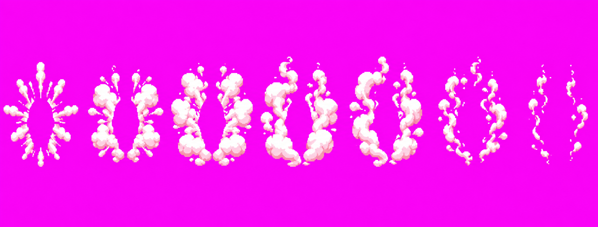
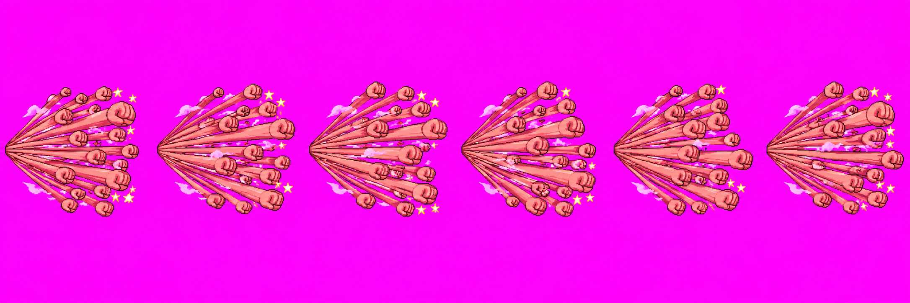